Главная / Стоматология
Южное Бутово. Второй этаж ТЦ, рядом метроВрач и КТ
в одном месте. Круглосуточно.
Стоматология у дома: от первого приёма до хирургии. Приходите без записи, даже ночью. Снимок делаем здесь же, ехать никуда не надо.
Что случилось?
Обычно на снимок отправляют «куда-то»
Ортопед и ортодонт без КТ работать не могут. В небольших клиниках аппарата часто нет, и пациент едет в другой район, а потом возвращается.
Здесь кабинет КТ за соседней дверью
Пара шагов от кресла врача. Без отдельной записи, без второй поездки, в том числе вечером и ночью.
Врач открывает снимок при вас
Показывает на экране, что происходит с зубом и костью. Вы видите то же, что и он, и можете спрашивать.
План и цена - на руки
Врач распишет лечение и цену на бумаге. Снимок пришлём в телефон или на почту: он ваш, можно показать любому врачу.
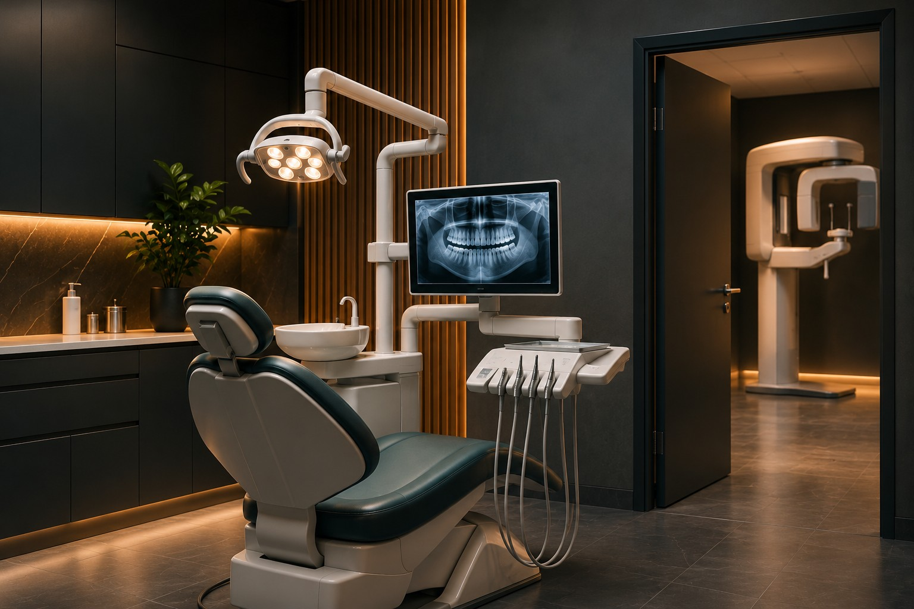
Кресло врача. КТ - за стеной.
Снимок без поездок: пара шагов из кабинета.
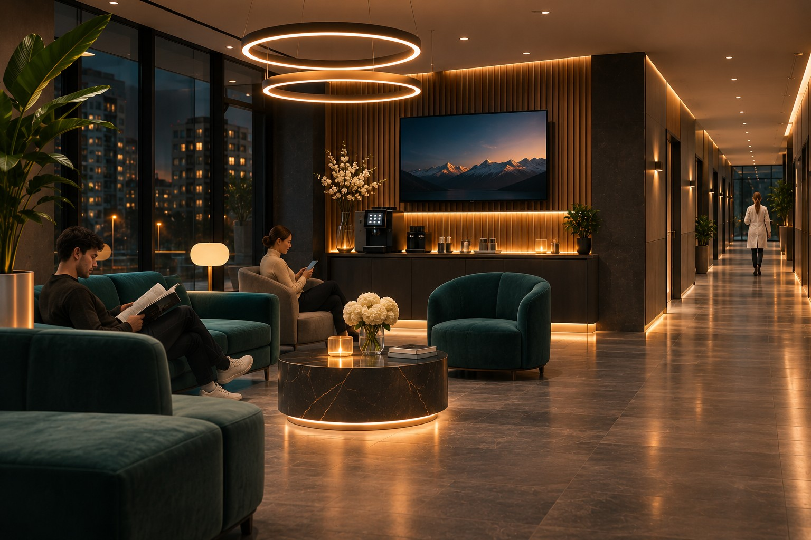
Просторно, как в хорошем отеле
Широкие коридоры, большие кабинеты. В холле диваны, кофе и телевизор, пока ждёте результат или близкого.
Кадры для примера, заменим съёмкой клиники после ремонта.
Торговый центр закрыт. Клиника открыта.
Самое важное ночью - спокойно дойти. Поэтому у нас отдельный вход, охрана и живой администратор на телефоне.
- ВходС торца здания, вывеска видна с дороги. Главный вход ночью не работает.
- Как войтиДомофон у двери и охрана. Позвоните, если едете: встретим.
- ПоднятьсяЛифт на второй этаж работает всю ночь. С коляской и пожилым родителем удобно.
- Сколько стоитЦену скажем до начала. Делаем только то, что нужно сейчас, остальное решим днём.
Все стоматологи под одной крышей
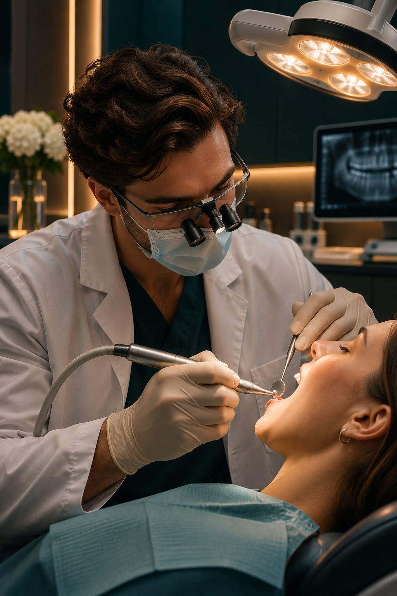
Лечение зубов
Кариес, пульпит, пломбы
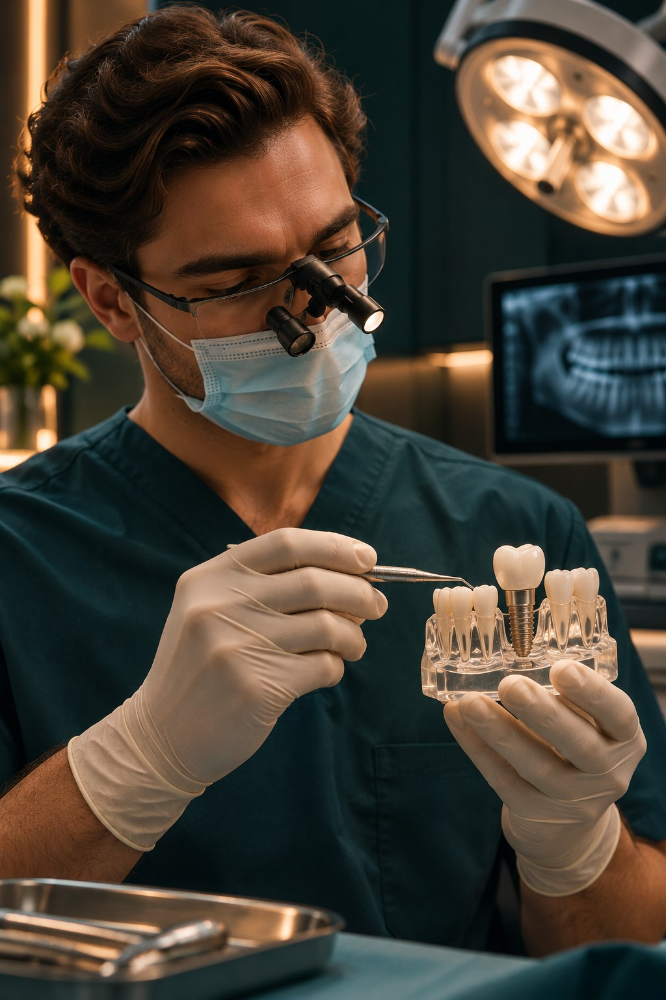
Удаление, импланты
План по КТ до операции
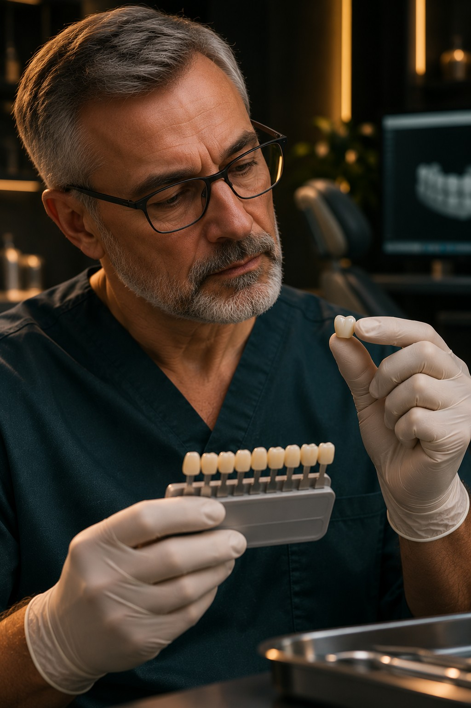
Коронки, протезы
Восстановим и самый сложный зуб
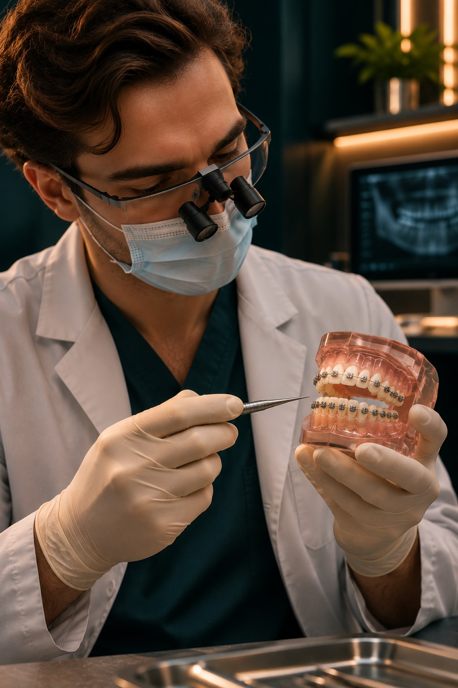
Прикус, брекеты
Брекеты и элайнеры
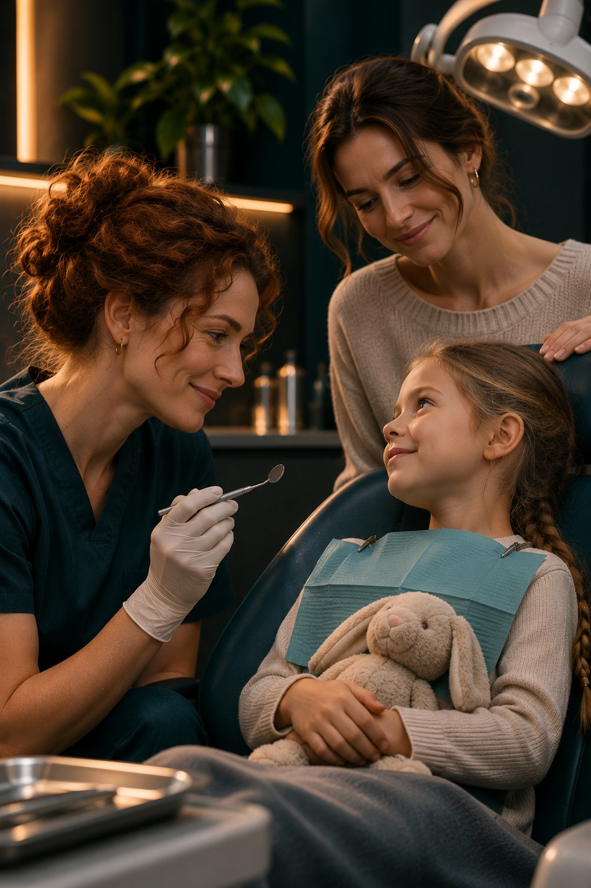
Зубы детей
Спокойно и без спешки
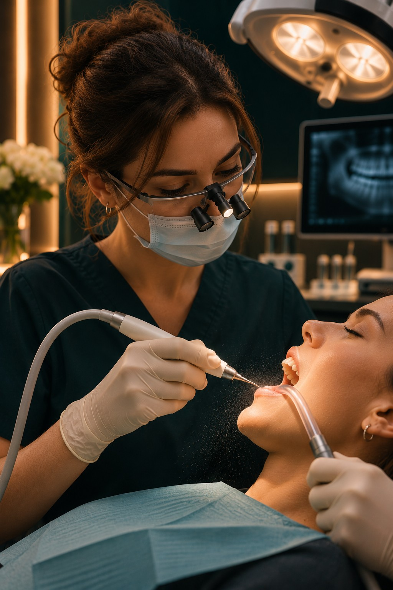
Чистка зубов
Налёт, камень, отбеливание
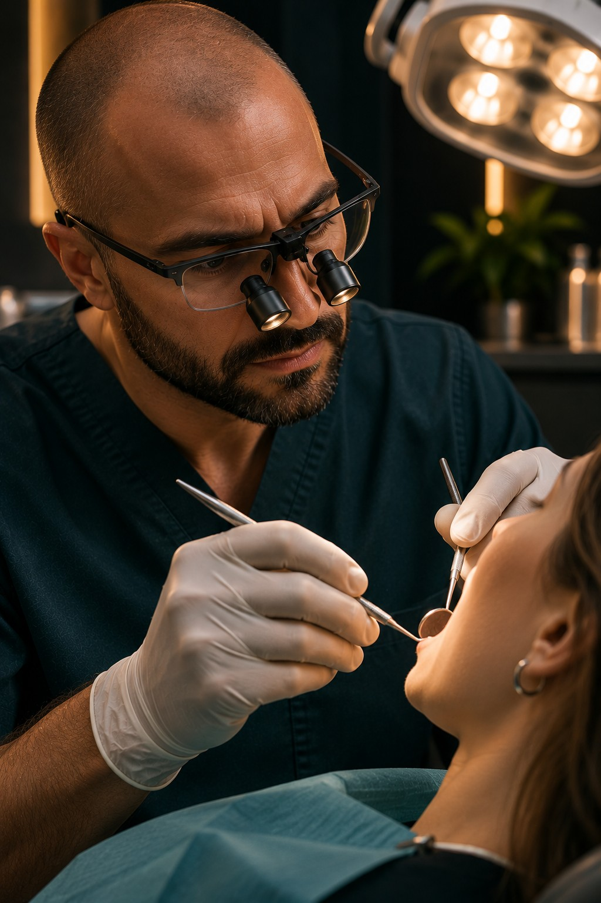
Дёсны
Кровоточивость и воспаление
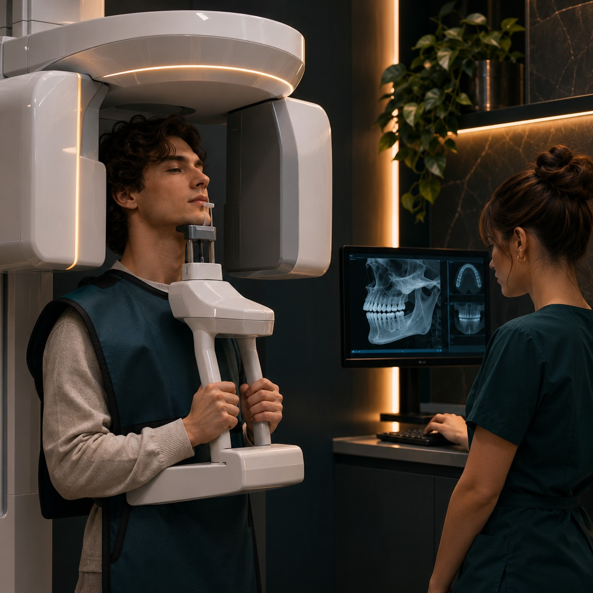
Снимки на месте
Файл сразу в телефоне
Фото врачей - после съёмки в клинике.
Цена понятна до начала
Цены по ситуациям. Врач называет сумму до того, как начнёт. Цифры справа - пример, поставим ваши.
| Снять острую больОсмотр, снимок зуба, обезболивание | от 0 000 ₽ |
| Приём ночьюС 21:00 до 09:00 | от 0 000 ₽ |
| КТ, сегментФайл на почту или в телефон | 0 000 ₽ |
| КТ двух челюстейДля импланта и брекетов | 0 000 ₽ |
| Удаление зубаПростое | от 0 000 ₽ |
| Имплант под ключС планом по КТ | от 00 000 ₽ |
Близко к дому
Второй этаж ТЦ у метро. Ночью - вход с торца. На каждый район сделаем свою страницу для поиска.
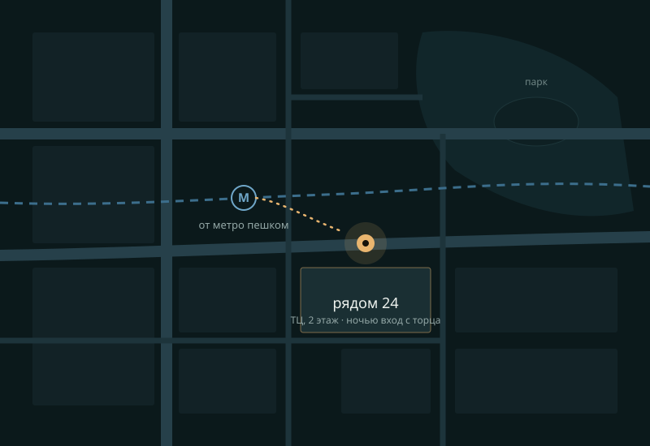
Открыть в Яндекс КартахПравда ли можно без записи ночью?
Да, приходите сразу. Если позвоните с дороги, вас встретят и подготовят кабинет.
КТ работает ночью?
Уточнить у клиники.
Принимаете детей?
Уточнить у клиники, в том числе ночью.
Можно только сделать снимок?
Да. Файл отдаём сразу, с ним можно пойти к своему врачу.
Есть лифт и парковка?
Лифт работает все часы работы клиники. Парковку уточнить у ТЦ.
Свежие статьи

Болит зуб ночью: что сделать до приёма врача
Почему ночью боль сильнее, что поможет дотянуть до кресла и когда ехать сразу.

Зачем делать КТ перед имплантом
Чем объёмный снимок отличается от обычного и почему без него врач работает вслепую.

У ребёнка болит зуб: как помочь и когда к врачу
Что сделать дома, какие признаки опасны и как подготовить ребёнка к приёму.
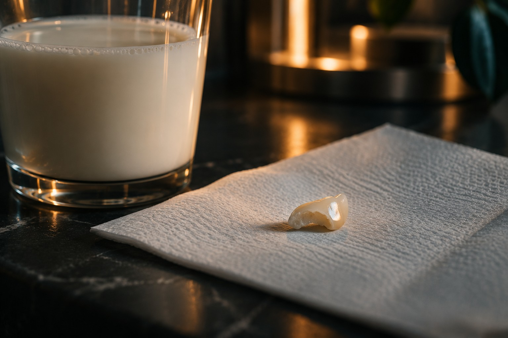
Сломался зуб: что делать в первые часы
Как сохранить отколотый кусок, чем закрыть острый край и можно ли спасти зуб.

Боюсь стоматолога: как лечиться спокойно
Страх врача - частая причина запущенных зубов. Что помогает его пережить.